Configure IIS¶
Additional configuration in Microsoft IIS¶
The default configuration of IIS 8.X is missing components that are necessary for HTTP access to Analysis Services.
Open the Web server role management
- Use Server Manager → Manage → Add Roles and Features then step through the wizard until you get to the Server Role* s. Scroll down to find Web Server (IIS).
Add the roles:
Web Server → Security → authentication methods → Windows Authentication, or Basic Authentication, and any other security features required for your data access scenario (Image - Authentication methods)
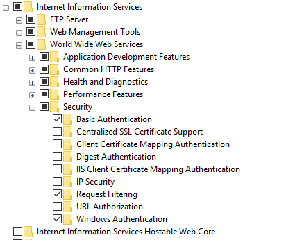Image - Authentication methods
Web Server → Application Development → CGI and ISAPI Extensions → CGI. (Image - IIS feature)
Web Server → Application Development → CGI and ISAPI Extensions → ISAPI Extensions. (Image - IIS feature)
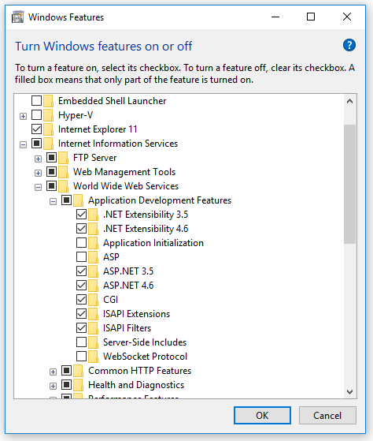Image - IIS feature
Copy openIMIS Analytic and reporting Services¶
Download and unzip the release from Github ar_imis_reporting_tool repository (https://github.com/openimis/ar_imis_reporting_tool/releases/latest) in a new folder (openIMIS.WS.X.Y.Z) under the IIS wwwroot (usually in C:\inetpub\wwwroot).
Copy the MSMDPUMP files to a folder on the Web server¶
Each HTTP endpoint that you create must have its own set of MSMDPUMP files. In this step, you copy the MSMDPUMP executable, configuration file, and resource folder from the Analysis Services program folders to a new virtual directory folder that you will create on the file system of the computer running IIS. The drive must be formatted for the NTFS file system. The path to the folder that you create must not contain any spaces.
Copy the following files, found at <drive>:Program Files\Microsoft SQL Server\<instance>\OLAP\bin\isapi: MSMDPUMP.DLL, MSMDPUMP.INI, and a Resources folder. (Image - MSMDPUMP folder content)
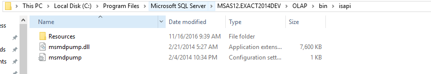Image - MSMDPUMP folder content
On the web server, create a new folder: <drive>:\inetpub\wwwroot\datawarehouse
Paste the files that you previously copied into this new folder.
Verify that the \inetpub\wwwroot\OLAP folder on your web server contains the following: MSMDPUMP.DLL, MSMDPUMP.INI, and a Resources folder. Your folder structure should look like this:
- <drive>:\inetpub\wwwroot\OLAP\MSMDPUMP.dll
- <drive>:\inetpub\wwwroot\OLAP\MSMDPUMP.ini
- <drive>:\inetpub\wwwroot\OLAP\Resources
Create an application pool in IIS¶
- Start IIS Manager
- Create OLAP application pool
- Open the server folder, then right-click Application Pools → Add Application Pool.
- Name the new application pool OLAP (Image - OLAP application pool configuration)
- .NET CLR version” set to *.NET CLR version v4.x,
- Managed pipeline mode set to classic.
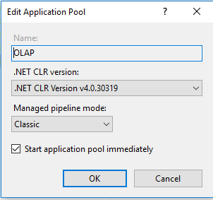Image - OLAP application pool configuration
- By default, IIS creates application pools using ApplicationPoolIdentity as the security identity, which is a valid choice for HTTP access to Analysis Services.
Create an virtual directory in IIS¶
In IIS Manager, open Sites, open Default Web Site. You should see a folder named Datawarehouse. This is a reference to the datawarehouse folder you created under \inetpub\wwwroot.(Image - Datawarehouse site tree structure)
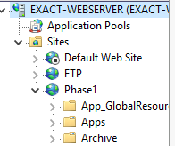Image - Datawarehouse site tree structure
Right-click on the Project IMIS (Phase 1) and then add Application
In Add Application, enter Datawarehouse for the alias. Click Select to choose the Datawarehouse application pool. Physical Path should be set to <drive>:\inetpub\wwwroot\ Datawarehouse(Image - ADD application on the datawarehouse site)
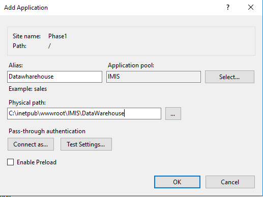Image - ADD application on the datawarehouse site
Click OK. Refresh the web site and notice that the IMIS (PHASE 1) folder is now an application under the default web site. The virtual path to the MSMDPUMP file is now established.(Image - New application in datawarehouse site tree structure)
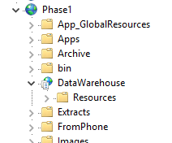Image - New application in datawarehouse site tree structure
Configure IIS authentication and add the extension¶
- In this step, you further configure the SSAS virtual directory you just created. You will specify an authentication method and then add a script map. Supported authentication methods for Analysis Services over HTTP include:
- Windows authentication (Kerberos or NTLM)
- Basic authentication
In this case we will use Basic authentication, make sure that the Basic authentication is checked in IIS features as as described in `additional_configuration_in_microsoft_iis>`__.
Basic authentication is used when you have Windows identities, but user connections are from non-trusted domains (if your client and server applications are in different domains), prohibiting the use of delegated or impersonated connections. Basic authentication lets you specify a user identity and password on a connection string. Instead of using the security context of the current user, credentials on the connection string are used to connect to Analysis Services. Because Analysis Services supports only Windows authentication, any credentials passed to it must be a Windows user or group that is a member of the domain in which Analysis Services is hosted.
This mode requires the user to enter a user name and password. The user name and password are transmitted over the HTTP connection to IIS. IIS will try to impersonate the user using the provided credentials when connecting to MSMDPUMP, but the credentials will not be delegated to Analysis Services. Instead, you will need to pass a valid user name and password on a connection, as described in Step 6 in this document.
Please note that it is imperative for anyone building a system where the password is transmitted to have ways of securing the communication channel. IIS provides a set of tools that help you secure the channel.
Set the authentication type
In IIS Manager, open sites, open Default Web Site, and then select the datawarehouse virtual directory.(Image - IIS configuration panel)
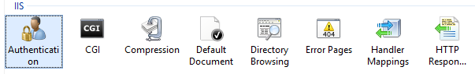Image - IIS configuration panel
Double-click Authentication in the IIS section of the main page.(Image - IIS Authentication configuration)
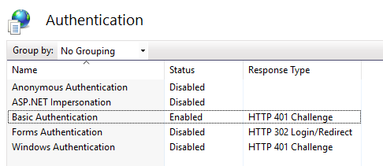Image - IIS Authentication configuration
- Disable Anonymous Authentication if you are using Windows or Basic authentication. When Anonymous authentication is enabled, IIS will always use it first, even if other authentication methods are enabled.
Click the datawarehouse virtual directory to open the main page. Double-click Handler Mappings.(Image - IIS configuration panel)
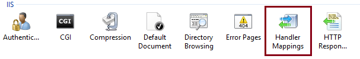Image - IIS configuration panel
Right-click anywhere on the page and then select Add Script Map. In the Add Script Map dialog box, specify \*.dll as the request path, specify <drive>:\inetpub\wwwroot\OLAP\msmdpump.dll as the executable, and type datawarehouse as the name. Keep all of the default restrictions associated with this script map.(Image - IIS handler mappings)
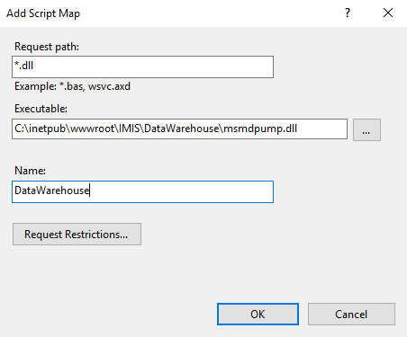Image - IIS handler mappings
When prompted to allow the ISAPI extension, click Yes.(Image - IIS handler mappings confirmation pop-up)
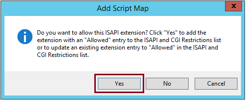Image - IIS handler mappings confirmation pop-up
Edit the MSMDPUMP.INI file to set the target server¶
The MSMDPUMP.INI file specifies the Analysis Services instance that MSMDPUMP.DLL connects to. This instance can be local or remote, installed as the default or as a named instance. Open the msmdpump.ini file located in folder <drive>:\inetpub\wwwroot\datawarehouse and take a look at the contents of this file. It should look like the following:
<ConfigurationSettings>
<ServerName>localhost</ServerName>
<SessionTimeout>3600</SessionTimeout>
<ConnectionPoolSize>100</ConnectionPoolSize>
</ConfigurationSettings>
If the Analysis Services instance for which you are configuring HTTP access is located on the local computer and installed as a default instance, there is no reason to change this setting. Otherwise, you must specify the server name (for example, <ServerName> EXACT-SRV01</ServerName>). For a server that is installed as a named instance, be sure to append the instance name (for example, <ServerName> EXACT-SRV01\\Tabular</ServerName>).
By default, Analysis Services listens on TCP/IP port 2383. If you installed Analysis Services as the default instance, you do not need to specify any port in <ServerName> because Analysis Services knows how to listen on port 2383 automatically. However, you do need to allow inbound connections to that port in Windows Firewall.
If you configured a named or default instance of Analysis Services to listen on a fixed port, you must add the port number to the server name (for example, <ServerName> EXACT-SRV01:55555</ServerName>) and you must allow inbound connections in Windows Firewall to that port.